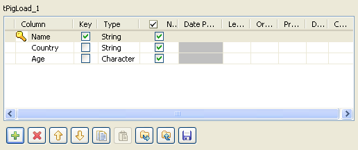

Avertissement
Ce composant est disponible dans la Palette de votre studio si vous avez souscrit à l'édition correspondante de Talend Big Data Studio.
|
Famille de composant |
Big Data/Hadoop | |
|
Fonction |
Ce composant vous permet de trier une relation selon une ou plusieurs clé(s) de tri définie(s). | |
|
Objectif |
Le composant tPigSort est utilisé pour trier une relation à partir d’une ou plusieurs clé(s) dé tri définie(s). | |
|
Basic settings |
Schema et Edit Schema |
Un schéma est une description de lignes, il définit le nombre de champs qui sont traités et passés au composant suivant. Le schéma est soit local (Built-in), soit distant dans le Repository. Si vous utilisez Talend Open Studio for Big Data, seul le mode Built-in est disponible. |
|
|
|
Built-in : Le schéma sera créé et conservé pour ce composant seulement. Voir également le Guide utilisateur de Talend Data Integration Studio. |
|
|
|
Repository : Le schéma existe déjà et est stocké dans le Repository. Ainsi, il peut être réutilisé dans divers projets et Jobs. Voir également le Guide utilisateur de Talend Data Integration Studio. |
|
|
Sort key |
Cliquez sur le bouton Add sous la table Sort key pour ajouter une ou plusieurs ligne(s) afin de spécifier une colonne et trier selon chaque clé de tri. |
|
Advanced settings |
Increase parallelism |
Cochez cette case pour définir le nombre de tâches “reduce” pour des Jobs MapReduce. |
|
|
tStatCatcher Statistics |
Cochez cette case pour collecter les données de log, aussi bien au niveau du Job qu’au niveau de chaque composant. |
|
Utilisation |
Ce composant est généralement utilisé comme étape intermédiaire. Il nécessite donc un composant d’entrée et un composant de sortie. | |
|
Prérequis |
La distribution Hadoop doit être correctement installée afin de garantir les interactions avec le studio. Par exemple, si vous devez vous connecter à MapR à partir du studio, assurez-vous d'avoir
installé le client MapR sur la même machine que le studio et d'avoir ajouté la bibliothèque
client de MapR dans la variable PATH de cette machine. Pour Windows, la bibliothèque est
lib\MapRClient.dll dans le fichier Jar du client MapR
; si vous ne l'ajoutez pas, il est possible que vous rencontriez l'erreur suivante :
Pour plus d'informations concernant l'installation d'une distribution Hadoop, consultez le manuel correspondant à la distribution Hadoop que vous utilisez. | |
|
Limitation |
La connaissance des scripts Pig est nécessaire. | |
Ce scénario décrit un Job à trois composants triant des lignes de données à partir d’une ou plusieurs condition(s) de tri et stockant le résultat dans un fichier local.

Déposez les composants suivants de la Palette dans l’espace de modélisation graphique : tPigSort, tPigLoad, tPigStoreResult.
Connectez le tPigLoad au tPigFilterRow à l’aide d’un lien Row > Pig Combine.
Connectez le tPigFilterRow au tPigStoreResult à l’aide d’un lien Row > Pig Combine.
Double-cliquez sur le composant tPigLoad pour ouvrir sa vue Basic settings.

Cliquez sur le bouton [...] à côté du champ Edit schema afin d’ajouter des colonnes au schéma du composant tPigLoad.
Cliquez sur le bouton Add afin d’ajouter les colonnes Name, Country et Age et cliquez sur OK pour sauvegarder la configuration.
Sélectionnez Local dans la liste Mode.
Renseignez le champ Input filename avec le chemin d’accès au fichier d’entrée.
Dans ce scénario, le fichier d’entrée est CustomerList. Il contient les lignes de noms, les noms des pays et les âges des clients.
Sélectionnez PigStorage dans la liste Load function.
Laissez les autres paramètres tels qu’ils sont.
Double-cliquez sur le tPigSort afin d’ouvrir sa vue Basic settings.

Cliquez sur Sync columns pour récupérer la structure du schéma du composant précédent.
Cliquez sur le bouton Add sous la table Sort key afin d’ajouter une nouvelle clé de tri. Sélectionnez Age dans la liste Column et sélectionnez ASC dans la liste Order.
Cette clé de tri va trier les données dans la liste CustomerList en ordre ascendant à partir de l’Age.
Double-cliquez sur le composant tPigStoreResult afin d’ouvrir sa vue Basic settings.

Cliquez sur Sync columns afin de récupérer la structure du schéma du composant précédent.
Cochez la case Remove result directory if exists.
Renseignez le champ Result file avec le chemin d’accès au fichier de résultat.
Dans ce scénario, le résultat du filtre est sauvegardé dans le fichier Lucky_Customer.
Sélectionnez PigStorage dans la liste Store function.
Laissez les autres paramètres tels qu’ils sont.